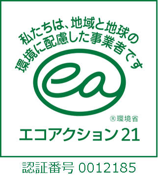
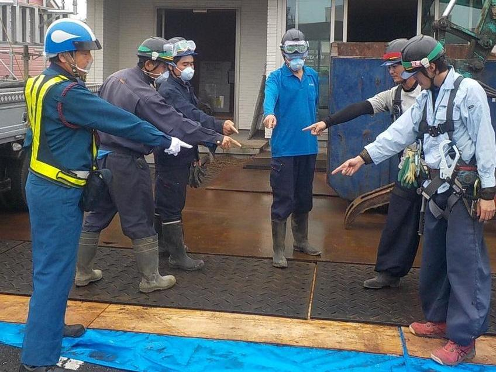
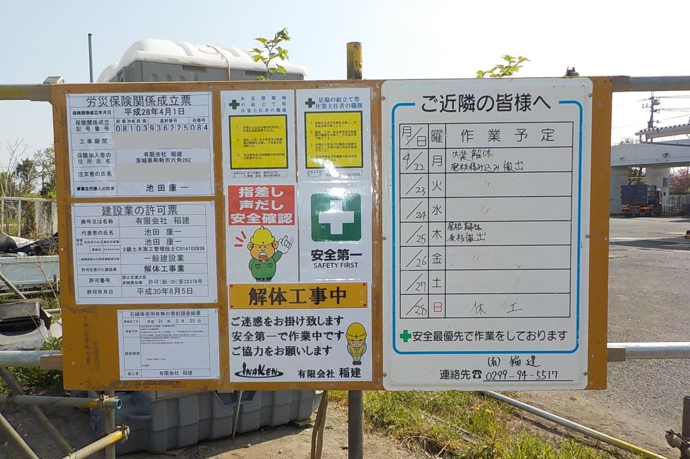
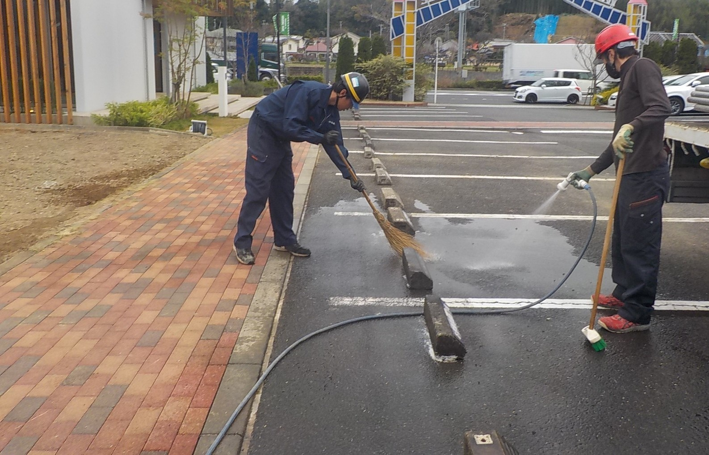

TRUST PROOF
コンプライアンス（許認可・環境認証・安全活動）の徹底
有限会社稲建は、建物総合解体から特殊解体まで、関係法令を遵守し、社会的責任を果たすための体制・許認可を明記しています。

建設業許可茨城県知事許可（般-30）第32378号
産業廃棄物収集運搬茨城・千葉・東京・埼玉・福島で許可保有
環境認証エコアクション21 認証・登録番号 0012185
安全活動朝礼、KY活動、5S、現場看板、近隣対策、道路清掃
LICENSE TABLE
許認可取得状況
区分
内容
発注における役割・重要性
建設業
茨城県知事許可（般-30）第32378号
解体工事および関連土木工事を適法に請け負うための基本要件。
産業廃棄物収集運搬
茨城県 第00801124739号 / 千葉県 第01200124739号 / 東京都 第13-00124739号 / 埼玉県 第01100124739号 / 福島県 第00707124739号
関東圏の複数県にまたがる広域的な運搬・処理ルートの設計が可能。
古物商
茨城県公安委員会 第401150000901号
解体時に発生する有価物の適正な買い取り・リサイクル処分に対応。
環境認証
エコアクション21 認証・登録番号 0012185
環境負荷の低減および法的なコンプライアンス体制を証明する環境省策定のガイドラインに基づく第三者認証。
QUALIFIED STAFF
保有資格・有資格者体制
施工管理・解体作業・石綿対応・高所作業・重機運用を支える有資格者体制。
SAFETY OPERATION
現場ごとの安全活動

朝礼・安全確認・5S活動
安全ミーティング、安全確認、KY活動、および5S活動を基本とし、安心・安全第一の安全活動を行います。

現場看板設置・近隣対策
分かりやすい現場看板の設置と適切な養生を行い、近隣対策に従事して周辺住民の皆様の安心を確保します。

解体工事後の道路清掃
工事車両の出入りや解体作業に伴う周辺道路の汚れを防ぐため、作業後は必ず道路清掃を行います。
朝礼・KY活動作業前に当日の危険箇所、重機動線、作業範囲、立入禁止範囲を確認。
5S活動整理・整頓・清掃・清潔・しつけを現場の基本運用として徹底。
近隣対策現場看板、挨拶、騒音・粉じん・車両動線への配慮。
道路清掃解体後、搬出後の道路清掃を行い、周辺環境への影響を抑える。
写真記録施工前、施工中、搬出、清掃、完了の記録を残し、報告に使える状態にする。
協力会社連携元請、協力会社、処分会社との連絡系統を整理し、現場での迅速な意思決定を可能にします。
COMPANY
会社概要
有限会社稲建は茨城県稲敷市を拠点に、茨城県・千葉県・東京都・埼玉県等の現場で解体工事と産業廃棄物収集運搬業を展開。
- 本社
- 〒300-0735 茨城県稲敷市六角262番地
- 代表
- 代表取締役 池田 康一
- 資本金
- 2500万円
- 電話
- 0299-94-5517
- FAX
- 0299-94-5519
- メール